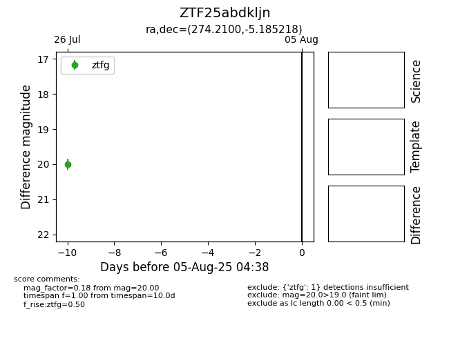

Target ZTF25abdkljn at 2025-08-05 04:38, see:
FINK: fink-portal.org/ZTF25abdkljn
Lasair: lasair-ztf.lsst.ac.uk/objects/ZTF25abdkljn
ALeRCE: alerce.online/object/ZTF25abdkljn
alt names
ZTF25abdkljn (ztf,fink)
coordinates:
equatorial (ra, dec) = (274.2100,-5.18522)
galactic (l, b) = (24.3420,+5.28369)
photometry
last ztfg=20.00
1 ztfg detections
